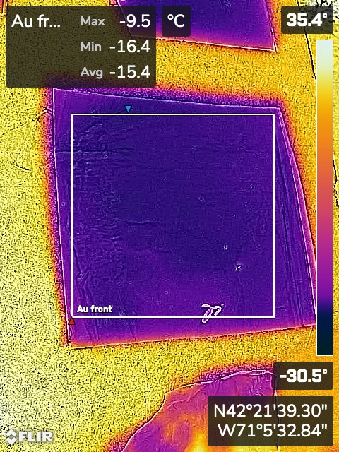

## Week 5:
### Monday:
We tested the ability of our reflector to focus. The focus point ended up being over a meter away
from our mirror, which was longer than we expected. In addition, we used the innermost half-circle
of our reflector as a new bounce mirror, which had a focal length of 1 meter. When the two were used
together, it ended up not focusing very well. We ended up discussing trying to use a flat bounce
mirror instead.
I tried to see if there was a noticeable difference between Aluminum foil and reflective tape, but
it was difficult to get an accurate measurement without the two being flat. This shows the importance
of flattening the material and reducing wrinkles on our actual reflector:
Tape vs aluminum foil:
Pictures of the reflector:
Other noticeable details:
* I'm not sure why, but the shadow of the meterstick we were using to hold up our bounce mirror did
not show up on the infrared FLIR camera.
* I did not see evidence of focusing heat.
* The tape was still better at reflecting than the acrylic.
### Wednesday:
We used our Week 6 board to test some more materials to see what we should use for the reflective
tube.
* Au front: The front side of the golden foil
* Au back: The back side of the golden foil
* Al front: The front side of the aluminum foil
* Al back: The back side of the aluminum foil
* Al glued: The front side of the aluminum foil glued down to cardboard
* Al dirty: The front side of the aluminum foil that was deliberately smudged with fingerprints
* text tape: The textured tape
* smooth tape: The smooth tape
* metal: The flattened peice of metal
* mark: Area covered with a black sharpie
Pictures:
Using the new tool I found:

Trying to measure the temperature of the glare (didn't really work, since I didn't know where the
center of the glare was and the glare is not all an uniform temperature.):
Seeing the difference between marked and unmarked:
<img src="marked_au_back.JPG" alt="marked Au glued" width="500"/>
Other pictures:
<img src="Smooth_vs_textured.JPG" alt="tape" width="500"/>
Findings:
* There was not much noticeable difference between the Aluminum foil and the Gold foil. The best move
would probably be prioritizing whatever one is easier to attach/shape.
* The front of both Aluminum and Gold foils were better than the back.
* There was no difference between the dirty/smudge materials and the clean ones. So we should not have
to worry about that in the future.
* There was a noticeable difference between the Aluminum front and the Aluminum front that was glued
down. This means that we need to carefully consider this when designing the backing of the reflective
tube.
* The reflective tape was still the best material.
We also tested a cone of paper covered with gold foil to see if this would help focus the light.
Pictures:
Findings:
*The heat bled through the reflective foil, warming the paper.
*The reflected light was not enough to substantially warm up the pot of water.
We also started to discuss our plans for the final design moving forward.